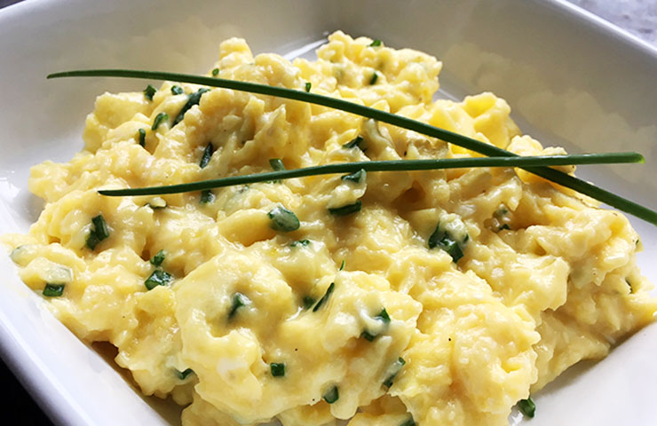

Scrambled Eggs

Description
Quick, easy and creamy scrambled egg breakfast by Gordan Ramsay.
Ingredients
- 3x Eggs
- Butter
- Creme Fraiche
- Olive Oil
- Chives
- Pepper
Steps
- Add all the eggs and a knob of butter into your frying pan. Do not stir the eggs yet!
- Turn on your stove and start stirring your eggs immediately while the heat is low
- Now you need to take the pan off the stove and keep stirring. Then put the pan back on to stove and keep stirring. Repeat this for about 3 to 4 times or
until the eggs are neither solid nor liquid but in a creamy state.
- Add some creme fraiche to the eggs to cool them down and keep it in it's creamy state
- Finally, add pepper and chopped chives to finish
- Enjoy the eggs, you deserved it!